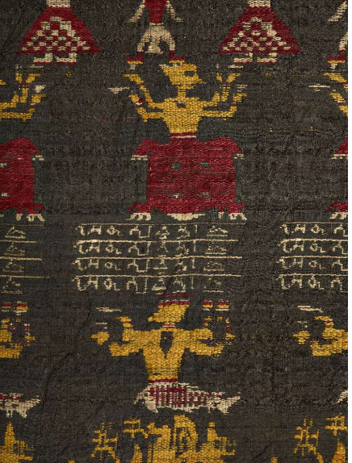

 The Centre for Indian Knowledge Systems is an academic centre involving multi-disciplinary research for preserving, documenting, and building upon a philosophic and scientific understanding of Indian Traditional Knowledge Systems.
In the 22nd convocation speech, on 22nd September 2020, honourable Prime Minister of India, Narendra Modi ji had requested IIT Guwahati to set up a Centre for Indian Knowledge Systems. Accordingly, the institute has taken steps to set up the Centre.
The Indian Knowledge Systems spread across a broad canvas from ancient textual material and manuscripts in classical Indian languages to folk practitioners, their craft and skills forming a living tradition. They are a store-house of retrievable information in varied areas like agriculture, architecture, metallurgy, metalworking, textiles, and healthcare systems, besides containing living oral traditions in numerous languages and literature. They also have rigorous theoretical knowledge ranging from astronomy and mathematics to metaphysics, grammar, logic, literature, and linguistics. This is a cumulative body of knowledge, practice, and belief, containing canonical and dissenting traditions that have evolved by adaptive processes and handed down to generations through a process of cultural transmission.
The Centre hopes to undertake original research in the area of Indian Knowledge Systems that will guide the development and implementation of programs for the diffusion of traditional and contemporary knowledge. The Centre will help IIT Guwahati to develop effective technologies that will help to provide realistic evaluations of local needs, environmental constraints, and production systems based on the local resources. Scholars from different backgrounds will be encouraged to participate in the new Centre’s interdisciplinary research and education programs, enabling them to evolve practices and technologies in varied areas for sustainable growth and development.